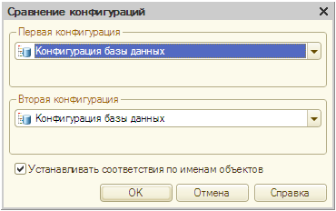
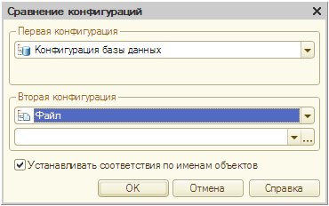
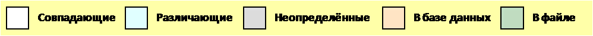
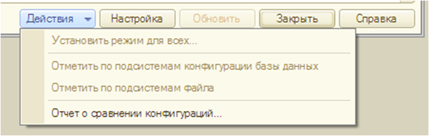
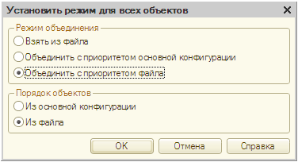
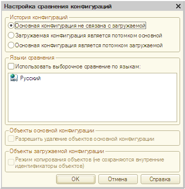
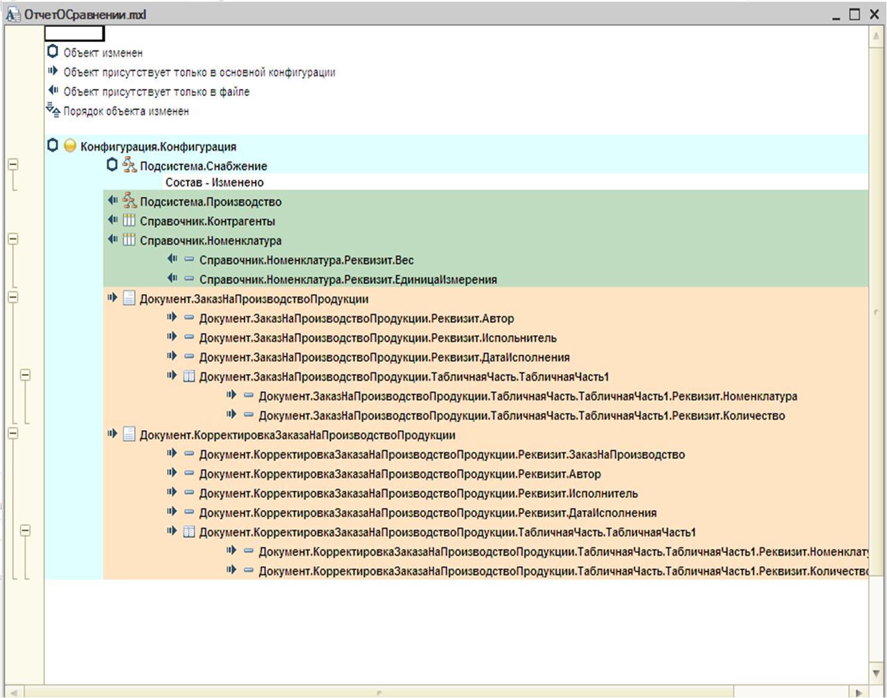

Сравнение и объединение конфигурации
Режим сравнения и объединения конфигураций позволяет детально сравнить две конфигурации и объединить их. Возможно выборочное объединение по результатам сравнения.
Режимом объединения можно воспользоваться, например, когда одну конфигурацию параллельно разрабатывают несколько человек. Время от времени им необходимо объединять результаты работы (или хотя бы один объединить все результаты в конце разработки).
Режим сравнения и объединения конфигураций можно также использовать для сравнения двух конфигураций без объединения.
Сравнению в этом режиме подвергаются как общие свойства объектов конфигураций, таких как справочники, документы, журналы, так и их отдельные реквизиты и реквизиты табличных частей. Отдельно сравниваются формы объектов: модули, тексты описаний и макеты. При этом результаты сравнения можно просмотреть детально.
Условия сравнения конфигураций
При запуске режима сравнения программа производит анализ конфигураций и устанавливает взаимное соответствие объектов.
Объекты, которым "не досталось пары", могут быть либо новыми, либо удалёнными, либо это объекты, относящиеся к одной категории, но называемые в разных конфигурациях по-разному.
При автоматической установке соответствия программа анализирует объекты конфигураций, имеющие одинаковые имена. Например, Справочник.Товары в одной конфигурации и Справочник.Товары в другой считаются одним справочником; им устанавливается соответствие, и они будут сравниваться.
Среди объектов, имеющих разные имена, отдельно проводится сравнение внутренних идентификаторов, которые конфигуратор присваивает автоматически при их создании. Присвоение внутренних идентификаторов необходимо для того, чтобы упростить установку соответствия объектов конфигураций и производить её автоматически. Эта ситуация возникает, например, в том случае, когда в процессе развития конфигурации было изменено имя объекта. Если имена различны, а внутренние идентификаторы совпадают, то для таких объектов автоматически устанавливается соответствие.
Запуск режима сравнения и объединения конфигураций
В определённом аспекте именно текущая конфигурация считается основной, в неё вносятся не повреждащие её изменения из загружаемой конфигурации. Исходя из этих соображений, рекомендуется выбрать, какую из двух конфиураций сделать основной. Выбранная конфигурация становится основной, когда с ней запускается система "1С:Предприятие" в режиме Конфигуратор.
Загружаемую конфигурацию, которую можно будет сравнить и объединить с основной, необходимо предварительно сохранить в файл.
Для загрузки второй конфигурации нужно выбрать пункт "Конфигурация - Сравнение и объединение конфигураций". Появится стандартный диалог "Открыть файл конфигурации", в котором нужно найти и открыть файл с расширением "*.cf" загружаемой конфигурации.
Процесс загрузки и сравнения может занимать продолжительное время. Это зависит от размера сравниваемых конфигураций.
Сравнение конфигураций
В дополнение к основному режиму сравнения и объединения конфигураций, описанному в предыдущем параграфе, при котором одна из сравниваемых конфигураций всегда выбирается основной, конфигуратор предоставляет возможность сравнить две произвольные конфигурации, например, расположенные в файлах, или конфигурацию хранилица (с выбором любой версии) и поставки и т.д.
Выбрать сравниваемые конфигурации можно с помощью меню "Конфигурация - Сравнить конфигурации", рис. 1.

Рис. 1. Сравнение конфигураций
Диалог содержит два раздела выбора сравниваемых конфигураций. Приемы работы в разделах одинаковые.
Выбор сравниваемых конфигураций может производиться из основной конфигурации, конфигурации базы данных, конфигурации, хранящейся в файле, версии конфигурации хранилища и конфигурации поставщика (если текущая конфигурация находится на поддержке).
Если выбран файл или хранилище, то в соответствующий раздел диалога добавляется поле для выбора файла или версии хранилища, рис. 2.

Рис. 2. Модифицированное окно сравнения конфигурации
Если сравниваемые конфигурации не являются потомками друг друга и поэтому для них не может быть произведена установка соответствия по внутренним идентификаторам, установите флажок "Установить соответствие по именам объетов". Для начала сравнения нажмите кнопку "OK". Конфигуратор произведёт сравнение указанных конфигураций и выведет результат сравнения в окно "Сравнение конфигарций".
Окно "Сравнение и объединение конфигураций"
После окончания процедуры сравнения на экран выводится окно "Объединение конфигураций". Оно позволяет:
- ознакомится с тем, какие объеты в двух конфигурациях отличаются;
- выбрать объекты, по которым необходимо детально изучить различия;
- вызвать указанные объекты для просмотра и редактирования;
- задать, какие из объектов включить в объединение;
- установить соответствие объектов;
- установить режимы объединения конфигураций (для всей конфигурации или по каждому объекту);
- устанвоить порядок подчиненных объектов (для всей конфигурации или по каждому объекту);
- сформировать отчёт о различиях в конфигурациях;
- запустить процесс объединения конфигураций.
Окно содержит табличное поле, которое состоит из трёх колонок, если конфигурации не связаны друг с другом, рис. 3

Рис. 3. Окно сравнения конфигурации
В первой колонке приводятся данные основной конфигурации (той информационной базы, которая открыта конфигуратором), во второй колонке - данные загружаемой конфигурации, а третья предназначена для установки режима объединения и порядка подчинённых объектов.
Признаком отличия (статус соответстия) объектов является цвет фона строк. Под табличным полем приведены возможные статусы, рис. 4.

Рис. 4. Виды отличий
Ниже расположено поле выбора "Фильтр", с помощью которого устанавливается режим просмотра изменений. При открытии окна "Объединение конфигураций" установлен фильтр "Показывать отличия в конфигурациях". Выбор других режимов позволяет изучить отличия конфигурациях или совпадения.
Нажатие на кнопку "Действия" открывает контекстное меню, рис. 5.

Рис. 5. Контекстное меню
Пункт "Установить режим для всех" открывает диалог становки режима объединения и установку порядка всех объектов, рис. 6

Рис. 6. Установка режима для всех
Пункты "Отменить по подсистемам..." позволяет установить отбор по подсистемам.
Пункт "Отчёт о сравнении" позволяет получить отчёт о сравнении двух конфигураций с нужной степенью подробности.
Настройка сравнения конфигураций
Нажатие на кнопку "Настройка" открывает диалог "Настройка сравнения конфигураций, рис. 7.

Рис. 7. Настройка сравнения конфигураций
В диалоге производится выбор режима сравнения конфигураций. По умолчанию установлен режим сравнения различных конфигураций (не связанных друг с другом).
Если конфигурации связаны, выберите характер связи. При закрытии диалога настройки (нажата кнопка ОК) в окно "Объединение конфигураций" добавляется специальная графа, в которой специальными пиктограммами показывается история изменений объектов.
Специальная графа добавляется для колонки "Загружаемая конфигурация", если загружаемая конфигурация является потомком основной конфигурации; для колонки "Основная конфигурация", если основная конфигурация является потомком загружаемой конфигурации.
Также в окно добавляется справочная информация для расшифровок статусов, объединённых в группу "Статусы по систории объектов".
Если в конфигурации используется несколько языков, то можно произвести выборочное сравнение по языкам. Для этого устновите флажок "Использовать выборочное сравнение по языкам" и укажите язык или языки, для которых необходимо приовести сравнение.
Практическое задание
Задание: Разработать две различные конфигурации и объединить их в одну конфигурацию. Для первой конфигурации создайте набор элементов из таблицы 1. Тоже самое проделайте и со второй конфигурацией, но теперь используйте набор элементов из таблицы 2. Сохраните первую конфигурацию в файл с именем "ИнформационнаяБаза1" и объедините вторую конфигурацию с данным файлом. Создайте отчёт о различиях между конфигурациями, рис. 8.
Таблица 1
| Подсистемы | ||
|---|---|---|
| Наименование | Описание | |
| Производство | - | |
| Справочники | ||
| Наименование | Описание | Подсистема |
| Контрагенты | Код (строка, 5), Наименование (строка 100) | Производство |
| Номенклатура | Код (число, 5), Наименование (50), Вес (3,2) Единица измерения (строка 4) | Производство |
Таблица 2
| Подсистемы | ||
|---|---|---|
| Наименование | Описание | |
| Снабжение | - | |
| Документы | ||
| Наименование | Реквизиты | Подсистема |
| Заказ На Производство Продукции | Шапка документа: Автор (строка 10), Испольнитель (строка 10), ДатаИсполнения (дата). Табличная часть: Номенклатура (строка 20), Количество (число 5,2) |
Снабжение |
| Корректировка Заказа На Производство Продукции | Шапка документа: ЗаказНаПроизводство (строка 10), Автор (строка 10), Исполнитель (строка 20), ДатаИсполнения(дата). Табличная часть: Номенклатура (строка 20), Количество (число 5,0). |
Снабжение |

Рис. 8. Результаты сравнения